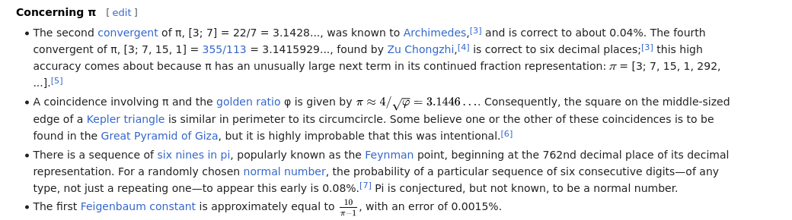
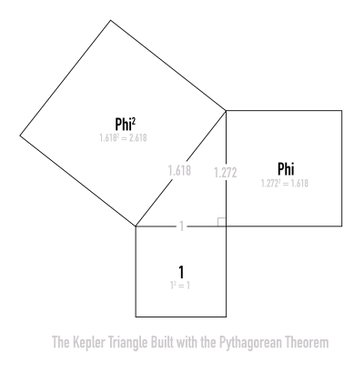
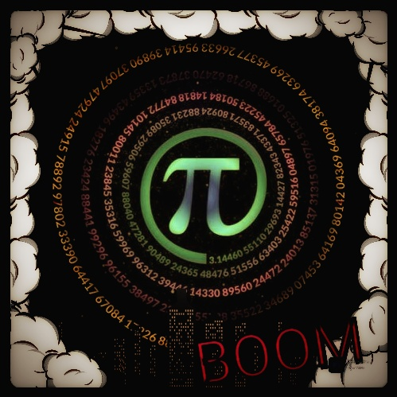

4/√Φ=Π
4/√Φ=Π is directly connected to the Squaring of the Circle, the Kepler's Right Triangle and Phi aka The Golden Ratio as well as a direct link to the Pyramids of Giza
VIDEOS

*** Links to Follow ***

Why Pi = 3.141 .. instead of 3.144? (ABOVE TOP SECRET
FORUM)
Kepler's Right Triangle
Youtube - Ninth Prime
Harry Lear
BEAM - Contact Report 260
Panagiotis Stefanides
Jain 108
Squaring the Circle (on Wikipedia)
TheyFly Blog - CR 856: Our Science Is Not Harmonious and Neither Are We
Mark and Scott Wollum - The Great Pi Conspiracy
Youtube - C.Baikouzis
Meier Saken - Time Travel
Youtube - Joe Breen Math - The TRUE value of Pi
Focus On Pi -
3.144606
More to come...

Please use DESMOS to calculate what's coming up next
Desmos Graphing AppThe Numbers 3 and 7 are hidden in the Golden Ratio and can be revealed using the Pythagorean Theorem
First, we must know and understand that φ is equal to ((1 + √5) / 2) which is 1.618034.
Then, using the Pythagorean Theorem, we reveal the numbers 3 and 7:
φ² + (1/φ)² = 3
φ⁴ + (1/φ)⁴ = 7
Minimal Polynomial
If a = 3 and b = 7, then we can do m = (a+b) and n = (a-b).
If m = (a+b) and n = (a-b), then α = (m+n) and β = (m*n).
Then... f(x) = x⁴ + αx² + β = 0... what about π?
Square
We take a and b then create the Perimeter of the square by doing √(b-a) = P which coincidentally P = x.
If we calculate half the side of the square, then s = P/8.
Circle
If we take the square root of the Golde Ratio (√φ) and multiply by the half side length of the square (s), then we get the radius of the Circle.